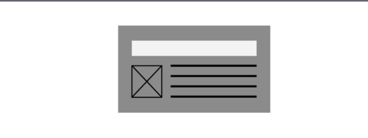
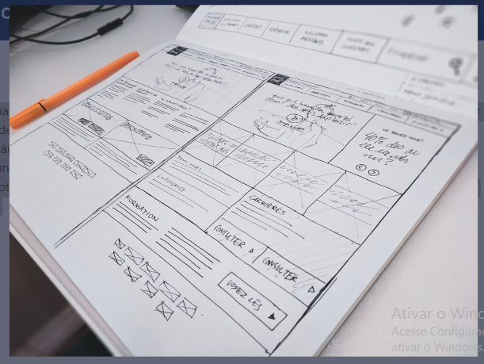
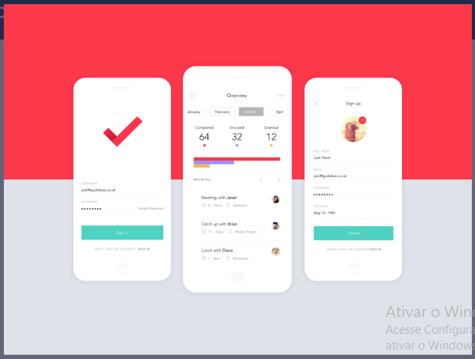
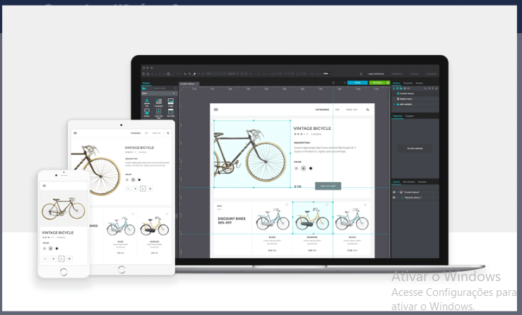
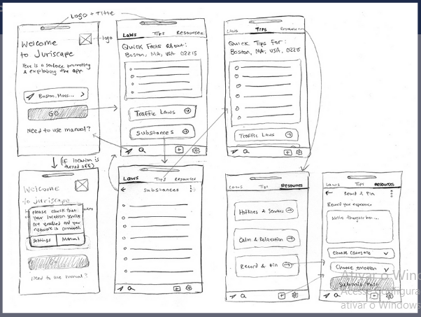
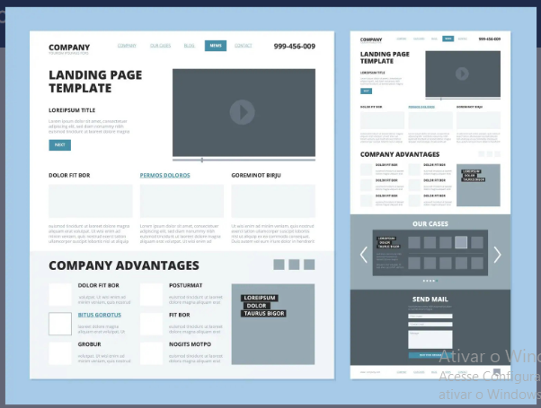

"Nós somos o que repetidamente fazemos. Excelência, então, não é um ato, mas um hábito".
A frase acima é de Aristóteles, um dos maiores filósofos da história da humanidade. E, apesar de ter sido redigida séculos atrás, ainda aplica-se nas profissões da atualidade. Um dos maiores desafios de ser um UX Designer, por exemplo, é a necessidade de melhoria contínua - como diria o vocabulário publicitário - "fora da caixa" e que se reinvente a cada novo projeto.
Por isso, entre as comunidades da área, não há um único designer que pense que ele não pode ficar melhor - e uma coisa simples pode ajudá-lo a se desenvolver a cada dia mais na profissão: estudar. Pensando nisso, nós preparamos um resumo com as principais ideias da última aula sobre Construir Wireframes para ajudá-lo a absorver todo o conteúdo apresentado. Vamos ver? (:
Um wireframe é um esboço simplificado e de baixa fidelidade do seu produto. Você geralmente pode reconhecê-los por seus layouts de blocos distintos, uso de linhas para representar texto e quadrados, e indicação de espaços reservados para imagens futuras.
Esse estilo de espinha dorsal torna os wireframes uma ótima ferramenta no início, dando tempo para consolidar sua arquitetura de conteúdo antes de mergulhar nos detalhes. Além disso, sua simplicidade de perdoar erros permite que você experimente mais, o que tira um pouco do incômodo de projetar a estrutura.
A maioria dos modelos de wireframe inclui linhas e caixas simples com muito pouca cor ou detalhes. Essas formas simples, porém, representam elementos de experiência do usuário, como menus, botões, conteúdo e funções de navegação. Por exemplo, um retângulo simples com as palavras “Logotipo/Home Page” pode representar onde o logotipo da empresa será colocado e que o logotipo será vinculado à página inicial do site.
Exemplo de Wireframe de uma HomePage de um site feito a mão - Unsplash
O wireframe difere de um mockup, por exemplo, que se assemelha mais a um modelo não funcional. Ele lhe dá uma ideia melhor de como será o produto final com gráficos, cores, marca e fontes, mas não tem nenhuma função de interface do usuário ativada. (Veja abaixo)
Exemplo de Mockup - PSD Repo
Da mesma forma que o protótipo, que está mais próximo de uma versão totalmente funcional do produto final. Ele pode ser usado para demonstrar recursos e funcionalidades. Também pode ser usado para testar UX e controle de qualidade. (Veja abaixo)
Exemplo de protótipo - Justinmind
No universo UX, um protótipo é uma expressão da intenção do design. A prototipagem permite que os designers apresentem seus projetos e os vejam em ação. No contexto de produtos digitais, um protótipo é uma simulação da interação final entre o usuário e a interface. Há dois tipos de protótipos: baixa fidelidade (lo-fi) e alta fidelidade (hi-fi). A prototipagem de baixa fidelidade (lo-fi) é uma maneira rápida e fácil de traduzir conceitos de design de alto nível em artefatos tangíveis e testáveis. O primeiro e mais importante papel dos protótipos lo-fi é verificar e testar a funcionalidade em vez da aparência visual do produto.
Protótipo de baixa fidelidade para um app - Grace Colbert - Dribble
Protótipo de baixa fidelidade para um app - Grace Colbert - Dribble
Já os protótipos de alta fidelidade (hi-fi) aparecem e funcionam da maneira mais semelhante possível ao produto real que será enviado. As equipes geralmente criam protótipos de alta fidelidade quando têm uma sólida compreensão do que vão construir e precisam testá-los com usuários reais ou obter a aprovação final do projeto das partes interessadas.
As principais características de um protótipo de alta fidelidade são:
Boas wireframes resolvem problemas reais e levam produtos de sucesso. Desde escrever o cenário até coletar inputs, aqui está um caminho comprovado para um ótimo site ou aplicativo. Criar um wireframe é fácil, mas criar um wireframe que contribua para a criação de um ótimo produto, vai muito além de ter uma ideia e desenhar uma imagem dela. Para isso, há alguns passos que você pode seguir:
Você deve primeiro entender para quem está projetando e qual problema está tentando resolver. Pare e volte aos seus requisitose/ou pesquisa de usuários para poder construir um bom wireframe. Pergunte-se
Hora de botar a mão na massa. Entre na sua ferramenta de wireframe e comece adicionando controles de interface do usuário à tela e movendo-os para combinar com as ideias da sua cabeça. Você pode querer desenhar controles como retângulos e texto para esboçar conceitos de alto nível. Nesta etapa, você quer velocidade e quantidade. Tudo bem estar bagunçado, você vai limpá-lo na próxima etapa.
Exemplo de estrutura de arame de layout de site, incluindo elementos de design como rodapé, cabeçalho e navegação - Adobe Stock Photos.
O objetivo nesta etapa é reunir as melhores partes das ideias que você visualizou na etapa anterior. Colete e combine os conceitos que atendem às necessidades de seus usuários da maneira mais elegante. Em seguida, adicione os detalhes ou etapas ausentes que você ignorou na fase de geração inicial.
Criar um bom design é apenas cerca de 50% do trabalho no processo de design. Comunicar sua ideia de forma eficaz e segui-la até a implementação também exigirá atenção e dedicação. Com isso, dê atenção à comunicação com seu time. Um bom wireframe deve ter 2 formas de comunicação para acompanhá-lo: A história por trás dele e instruções para desenvolvedores.
Chegamos na reta final: a validação. O importante aqui é garantir que seu design realmente valha a pena ser construído. Neste ponto, nenhum código foi escrito ainda, por isso é muito melhor pegar um erro aqui do que depois que o produto foi lançado. Valide se o seu projeto pode ser realmente construído no tempo determinado. Se possível, teste seu design com algumas das pessoas que o construirão, de fato, e certifique-se de que você não terá uma surpresa quando eles voltarem com as estimativas de tempo. Por fim, você também pode validar suas ideias de design observando as pessoas usá-las em testes de usabilidade.